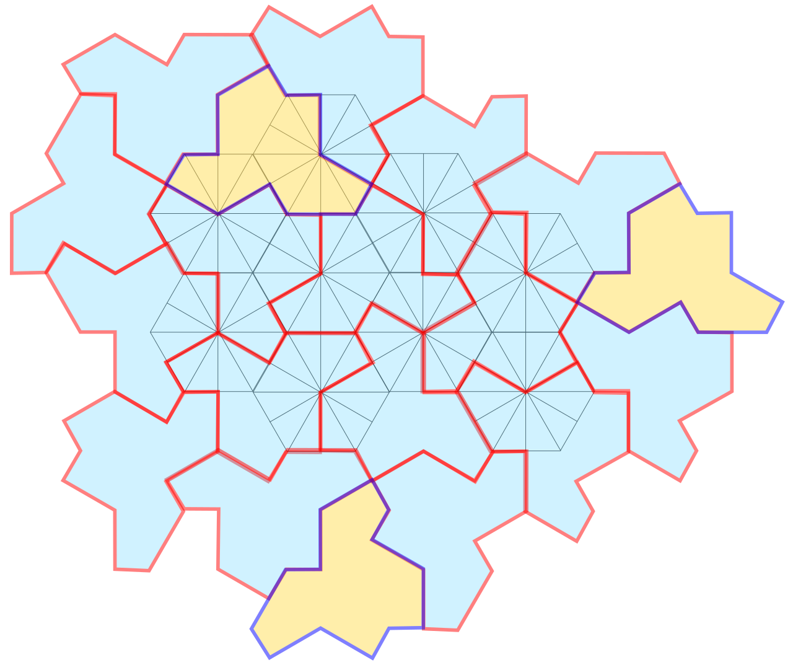

Hat tile
The first aperiodic monotile, an asymmetric polykite announced in March 2023.
What the Hat is
The Hat is an asymmetric polykite — eight kites carved from a hexagonal grid — that admits tilings of the plane, but none that are periodic. Found by hobbyist David Smith and proven aperiodic by Smith, Myers, Kaplan, and Goodman-Strauss, it was the first shape shown to solve the einstein problem.[1] The original paper gives two proofs, one computer-assisted; independent arguments[4] and a direct construction[5] followed within months, and the shape can also be reached from classical Wang-tile machinery.[7]

Geometry and the proof idea
A polykite is a shape assembled edge-to-edge from kites in a regular kite grid. The Hat uses eight such kites, so its outline inherits a small set of edge directions and lengths. It belongs to the two-parameter Tile(a,b) family: changing the two edge scales deforms the outline while preserving the combinatorial pattern; the Hat is Tile(1,√3), the Turtle is Tile(√3,1), and Tile(1,1) leads to the Spectre construction.[1][2]
The proof forces any Hat tiling to group into a finite set of labeled metatiles. Those metatiles in turn form larger copies of the same labeled system. Repeating this grouping creates structure on unbounded scales, contradicting any fixed translation period.[1] An independent proof and a direct construction provide useful checks on that hierarchy-based account.[4][5]
Why reflections matter
Every Hat tiling mixes unreflected and reflected tiles at a fixed ratio. Whether that disqualifies it as a "true" monotile sparked public debate; the authors and standard references (Grünbaum & Shephard) count reflected congruent copies as the same tile shape.[1][3] The debate was settled constructively two months later: the Spectre tiles aperiodically with no reflected copies at all.[2]
Physics on the Hat lattice
Because the Hat gives physicists their first aperiodic monotile lattice, it quickly became a substrate for model systems. Its tilings have quasicrystalline diffraction structure — sharp Bragg-like peaks with symmetries forbidden to periodic crystals.[6] Exact diffraction theory now places Hat tilings in CAP cut-and-project model sets with computable Fourier–Bohr amplitudes,[31][35] while crystallographic analysis shows vertex diffraction riding on an underlying periodic framework.[33] A nearest-neighbor tight-binding model on the Hat vertex graph shows graphene-like features, chirality, and exact zero modes under ideal equal hopping; it is not a vibrational experiment.[20] Statistical mechanics has been worked directly on the tiling: the Ising model on the Hat lattice[21] and dimer models on the Spectre tiling[22] both reveal how aperiodic adjacency changes collective behavior. For anyone designing materials, these papers are the evidence base that monotile geometry is not just decoration in those models. They do not imply that every Hat-shaped material has improved performance.
Ref. 20 first chooses a graph and Hamiltonian: one orbital on each selected Hat vertex with ideal nearest-neighbor hopping. A honeycomb approximant covers about 53% of vertices and reproduces Dirac-like structure near E≈−0.2t. One H2 patch has eight exact zero modes at zero flux and 22 at half flux, but unequal hopping, boundaries, and finite size can move or broaden them.[20] The Ising study instead uses the underlying kite graph, reaches 939,201 spins, and reports Tc/J=2.405±0.0005 with ordinary two-dimensional Ising scaling.[21]
What is established and what is not
Established results include the Hat’s forced aperiodicity with reflected copies, its substitution structure, and rigorous long-range-order descriptions for related CAP representatives.[1][31] Physical papers cited here specify particular graphs, point sets, or honeycomb constructions; their conclusions should not be transferred to an arbitrary decorative Hat pattern.
Open practical questions include boundary design, defect tolerance, finite-size convergence, and which Tile(a,b) member best serves a given load or wavelength. A laser-cut puzzle demonstrates manufacturability, not mechanical or wave performance. Those claims need matched periodic, random, and alternative aperiodic controls.
See also
Aperiodic monotile, Spectre tile, Discovery history of the Hat and Spectre, Diffraction and dynamical spectrum
Categories: Mathematics · Concepts